Multithreading example
Overview
The multithreading example illustrates the following features:
- QuRT APIs:
- Threads
- Barriers
- Mutexes
- Benefits of using multithreading and L2 prefetching
- Using the command line or the Eclipse IDE to perform the following steps:
- Building
- Simulating
- Running on target device
- Debugging on simulator
For more information on the usage of QuRT APIs, please refer to the OS section introducing QuRT.
Project structure
The example demonstrates the usage of QuRT APIs for launching multiple threads, synchronizing threads with mutexes and barriers, and L2 prefetching. Here is the project flow for the multithreading example:
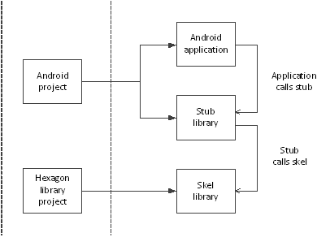
-
MakefileRoot makefile that invokes variant-specific min files to either build the application processor source code or the Hexagon DSP source code.
-
hexagon.min,android.minContain the make.d directives used to build the application processor and Hexagon DSP source code.
-
inc/multithreading.idlIDL interface that defines the multithreading API.
This IDL file is compiled by the QAIC IDL compiler into the following files:
multithreading.h: C/C++ header filemultithreading_stub.c: Stub source that needs to be built for the HLOS (Android, etc...)multithreading_skel.c: Skel source that needs to be built for the Hexagon DSP
-
src/multithreading.cSource for the Android executable that calls the multithreading stub on the HLOS side to offload the compute task onto the DSP.
-
src/multithreading_imp.cSource for the Hexagon side implementation of the multithreading interface and is compiled into a shared object.
Building
Using the walkthrough script
-
The example comes with a walkthrough script called
multithreading_walkthrough.pywhich builds the code and runs on target. -
The script must be run using the following command :
python multithreading_walkthrough.py -T <Target Name>
Please review the generic setup and walkthrough_scripts instructions to learn more about setting up your device and using walkthrough scripts.
Using the make commands
-
To build your code without using the walkthrough script, you will need to build both the Android and Hexagon modules. To build the android module along with the dependencies, run the following command:
make android VERBOSE=1 -
To build the hexagon module and run the example on the simulator, run the following command:
make hexagon DSP_ARCH=v66 VERBOSE=1
For more information on the build syntax, please refer to the building reference instructions..
Running on simulator
The following command builds the necessary hexagon modules using the Hexagon toolchain 8.4.12 for the v66 architecture and runs the example on the hexagon simulator :
make hexagonsim DSP_ARCH=v66
Running on target
If you want to run your code on target without using the walkthrough script, please use the following steps:
-
Use ADB as root and remount system read/write
adb root adb wait-for-device adb remount -
Push the HLOS side multithreading test executable and supporting multithreading stub library to the device
adb shell mkdir -p /vendor/bin/ adb push android_ReleaseG_aarch64/multithreading /vendor/bin/ adb shell chmod 777 /vendor/bin/multithreading adb push android_ReleaseG_aarch64/ship/libmultithreading.so /vendor/lib64/ -
Push the Hexagon Shared Object to the device's file system
adb shell mkdir -p /vendor/lib/rfsa/dsp/sdk adb push hexagon_ReleaseG_toolv84_v66/ship/libmultithreading_skel.so /vendor/lib/rfsa/dsp/sdk -
Generate a device-specific test signature based on the device's serial number
Follow the steps listed in the Use signer.py section of the signing documentation.
Note: This step only needs to be done once as the same test signature will enable loading any module.
-
Redirect DSP FARF messages to ADB logcat by creating a farf file
adb shell "echo 0x1f > /vendor/lib/rfsa/dsp/sdk/multithreading.farf"Please refer to the page on messaging resources which discusses the tools available for logging debug messages from the DSP.
-
Launch a new CLI shell to view the DSP's diagnostic messages using logcat
Open a new shell or command window and execute :
adb logcat -s adsprpc -
Execute the multithreading example binary as follows :
adb shell /vendor/bin/multithreading -
Analyze the output
The command window or shell should contain messages returned by the application processor when using the
printfcommand.Retrieving CDSP information using FastRPC Capability API DOMAIN_SUPPORT : 1 UNSIGNED_PD_SUPPORT : 1 Result of capability query for VTCM_PAGE on CDSP is 262144 bytes Result of capability query for VTCM_PAGE on ADSP is 0 bytes Starting multithreading test Test PASSED Please look at the mini-dm logs or the adb logcat logs for DSP output
Debugging
This section covers the steps to debug the multithreading program.
Command-line debugging on the simulator
-
Build the hexagon module using the following command:
make hexagon BUILD=Debug DSP_ARCH=v66This generates the
multithreading_q.sofile. -
Define the LLDB_HEXAGON_BOOTER_PATH environment variable :
-
Linux:
export LLDB_HEXAGON_BOOTER_PATH=$HEXAGON_SDK_ROOT/rtos/qurt/computev66/sdksim_bin/runelf.pbn -
Windows:
set LLDB_HEXAGON_BOOTER_PATH=%HEXAGON_SDK_ROOT%\rtos\qurt\computev66\sdksim_bin\runelf.pbn
When
hexagon-lldbreaches the simulator launch, it checks for this environment variable and if it exists, treats therunelf.pbnin this path as the main target and picksmultithreading_q.sofile as its first argument to it. -
-
Launch the debugger
hexagon-lldbwith therun_main_on_hexagon_simbinary along with the arguments as follows:-
Linux:
$HEXAGON_SDK_ROOT/tools/HEXAGON_Tools/8.4.12/Tools/bin/hexagon-lldb $HEXAGON_SDK_ROOT/libs/run_main_on_hexagon/ship/hexagon_toolv84_v66/run_main_on_hexagon_sim -- -mv66 --simulated_returnval --usefs hexagon_Debug_toolv84_v66 --pmu_statsfile hexagon_Debug_toolv84_v66/pmu_stats.txt --cosim_file hexagon_Debug_toolv84_v66/q6ss.cfg --l2tcm_base 0xd800 --rtos hexagon_Debug_toolv84_v66/osam.cfg -- -- $HEXAGON_SDK_ROOT/examples/multithreading/hexagon_Debug_toolv84_v66/multithreading_q.so -
Windows:
%HEXAGON_SDK_ROOT%\tools\HEXAGON_Tools\8.4.12\Tools\bin\hexagon-lldb.exe %HEXAGON_SDK_ROOT%\libs\run_main_on_hexagon\ship\hexagon_toolv84_v66\run_main_on_hexagon_sim -- -mv66 --simulated_returnval --usefs hexagon_Debug_toolv84_v66 --pmu_statsfile hexagon_Debug_toolv84_v66\pmu_stats.txt --cosim_file hexagon_Debug_toolv84_v66\q6ss.cfg --l2tcm_base 0xd800 --rtos hexagon_Debug_toolv84_v66\osam.cfg -- -- hexagon_Debug_toolv84_v66\multithreading_q.so
-
-
The output of the above command must be :
Hexagon utilities (pagetable, tlb, pv) loaded Hexagon SDK device_connect command loaded (lldb) target create "/path/to/SDK_ROOT/libs/run_main_on_hexagon/ship/hexagon_toolv84_v66/run_main_on_hexagon_sim" Current executable set to /path/to/SDK_ROOT/libs/run_main_on_hexagon/ship/hexagon_toolv84_v66/run_main_on_hexagon_sim' (hexagon). (lldb) settings set -- target.run-args "-mv66" "--simulated_returnval" "--usefs" "hexagon_Debug_toolv84_v66" "--pmu_statsfile" "hexagon_Debug_toolv84_v66/pmu_stats.txt" "--cosim_file" "hexagon_Debug_toolv84_v66/q6ss.cfg" "--l2tcm_base" "0xd800" "--rtos" "hexagon_Debug_toolv84_v66/osam.cfg" "--" "--" "/path/to/SDK_ROOT/examples/multithreading/hexagon_Debug_toolv84_v66/multithreading_q.so" -
Breakpoints can be set using the following command :
b multithreading_parallel_sumThis sets the breakpoint at the entry point of the function
multithreading_parallel_sum -
Use 'r' to start running the program :
r -
The debugger stops the process at the given breakpoint and the output looks as follows :
Starting multithreading test Process 1 stopped * thread #16, name = 'ribbon', stop reason = breakpoint 1.1 frame #0: 0xd8044934 multithreading_q.so`multithreading_parallel_sum(h=14593280) at multithreading_imp.c:90:5 87 * We initialize all threads with an equal priority value of: QURT_THREAD_ATTR_PRIORITY_DEFAULT/2 (127) 88 */ 89 -> 90 qurt_thread_attr_init(&attr1); 91 qurt_thread_attr_set_name(&attr1, (char *)"cntr1"); 92 qurt_thread_attr_set_stack_addr(&attr1, malloc(1024)); 93 qurt_thread_attr_set_stack_size(&attr1, 1024); -
You can step into, step over, continue the process, obtain the register information, print the variable values and perform other functions. Some useful debugger commands are:
Command Description breakpoint list Lists the breakpoints register read Show general purpose registers for current thread thread list Lists the threads along with the thread ID and name thread backtrace Prints the stack backtrace for current thread frame info List information about the selected frame in current thread up Select stack frame that has called the current stack frame down Select stack frame that is called by the current stack frame frame variable Display a stack frame's arguments and local variables target variable Display global/static variables defined in current source file step Do a source level single step in current thread next Do a source level single step over in current thread si Do an instruction level single step in current thread ni Do an instruction level single step over in current thread finish Step out of current selected frame tlb Display the values for TLB in current thread pagetable Display the values for the pagetable in current thread memory read --size "n" "addr" --outfile "file.txt" Read "n" number of bytes from memory starting from the hexadecimal address "addr" and save the results to "file.txt" disassemble --frame Disassemble current function for the current frame image list Display the main executable and all dependent shared libraries exit To quit the hexagon-lldb debugger
Please refer to the Hexagon LLDB Debugger User Guide for more information on hexagon-lldb.
Eclipse debugging with the simulator
This section explains how to build, run and debug the code on the simulator using the Eclipse IDE. The paths used and the diagrams shown assume the Operating System to be Windows, but similar rules apply for Linux and the paths must be adjusted accordingly.
Import the example project to the workspace :
-
To import the
multithreadingexample, right-click inProject Explorerand select :Import -> Hexagon C/C++ -> Import Hexagon Project > Next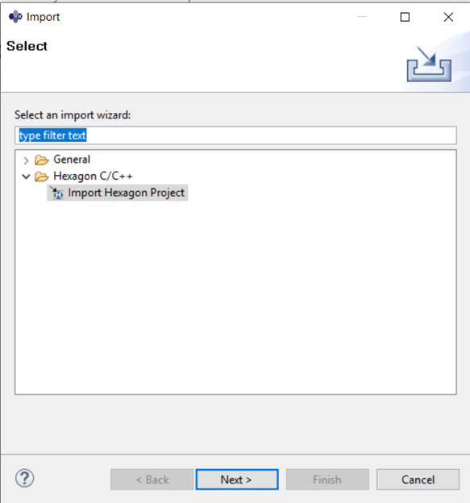
-
In the next dialogue box, set the following project properties :
- Project type :
Makefile Project - Project Name :
multithreading - Existing Code Location :
\path\to\SDK_ROOT\examples\multithreading
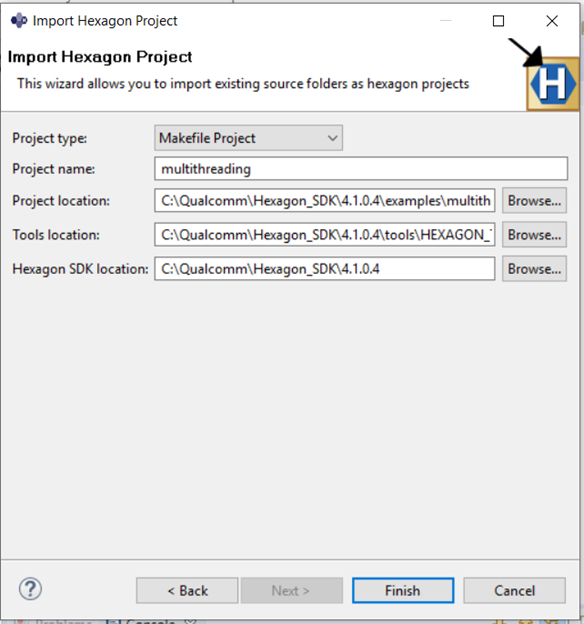
Click on
Finishbutton to import themultithreadingcode as aMakefile Project. - Project type :
Build the imported project
-
To build the imported project, right-click on the
multithreadingproject and select :Properties > C/C++ BuildIn the
Builder Settingstab, set the build command :- Build command :
make BUILD=Debug DSP_ARCH=v66
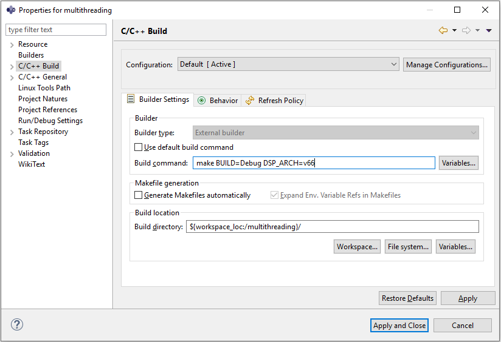
- Build command :
-
In the
Behaviortab, set the flags :- Build :
hexagon - Clean :
hexagon_clean
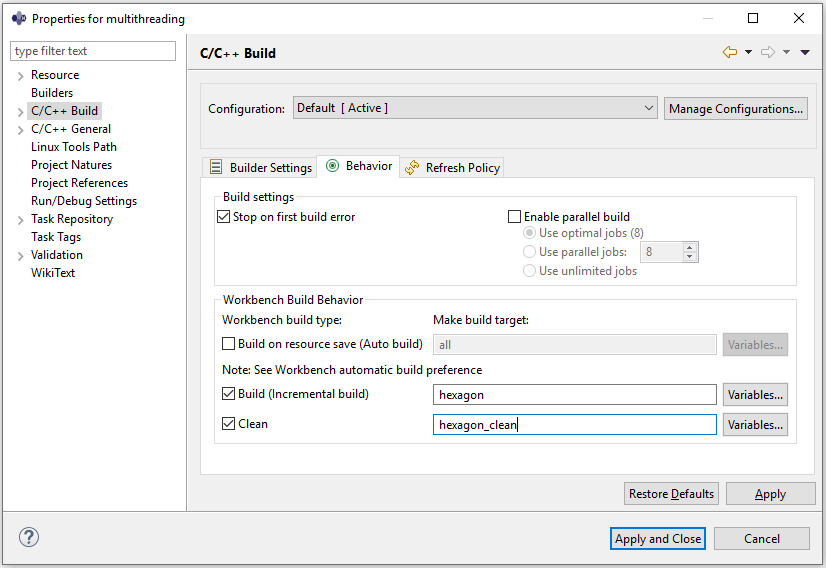
Click the
Apply and Closebutton. - Build :
-
To build the project, right-click on the
multithreadingproject and selectBuild Project.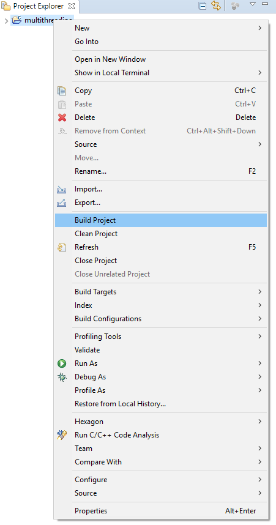
Run the project on simulator
-
To run the project, right-click on the
multithreadingproject and select :Run As > Run Configurations...In the
Run Configurationsdialog box, selectHexagon C/C++ Applicationand under theMaintab, set the simulator target :- C/C++ Application :
\path\to\SDK_ROOT\rtos\qurt\computev66\sdksim_bin\runelf.pbn
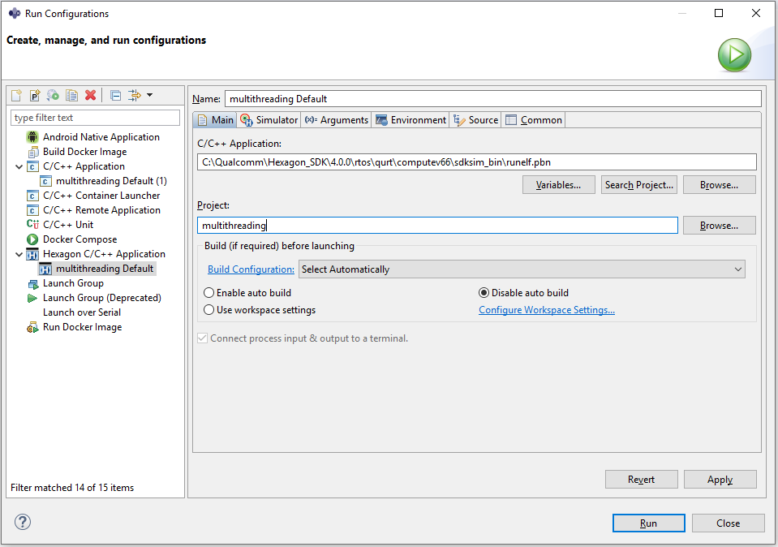
- C/C++ Application :
-
Under the
Simulatortab, set the simulator arguments :-
CPU Architecture :
v66 -
Miscellaneous Flags :
--simulated_returnval --usefs hexagon_Debug_toolv84_v66 --l2tcm_base 0xd800 --rtos hexagon_Debug_toolv84_v66\osam.cfg
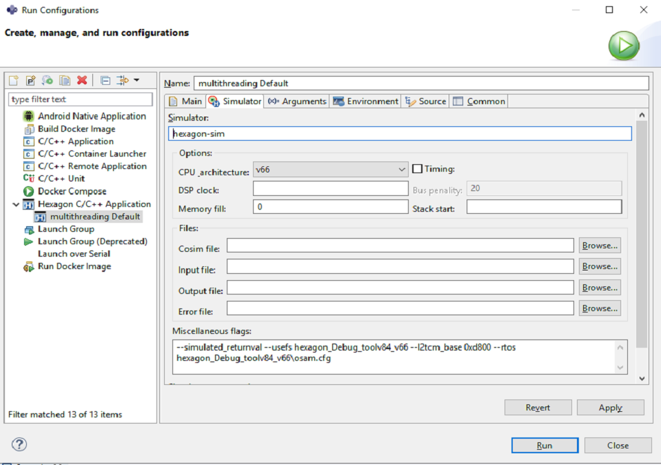
-
-
Under the
Argumentstab, set the program arguments :- Program arguments :
\path\to\SDK_ROOT\libs\run_main_on_hexagon\ship\hexagon_toolv84_v66\run_main_on_hexagon_sim -- hexagon_Debug_toolv84_v66\multithreading_q.so
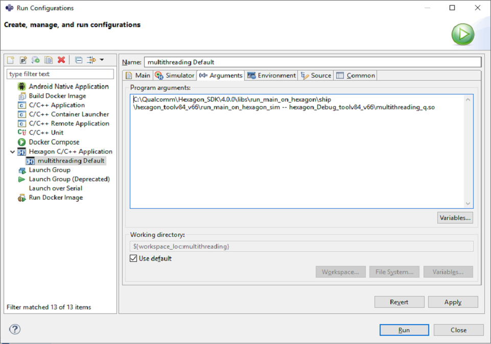
To execute the program, click the
Runbutton. - Program arguments :
Define LLDB_HEXAGON_BOOTER_PATH
-
The
LLDB_HEXAGON_BOOTER_PATHenvironment variable needs to be defined before the start of debugging on the simulatorRight-click on the project and select :
Properties > C/C++ Build > Environment > Add...In the dialog-box that opens, set the environment variable :
- Name :
LLDB_HEXAGON_BOOTER_PATH - Value :
\path\to\SDK_ROOT\rtos\qurt\computev66\sdksim_bin\runelf.pbn
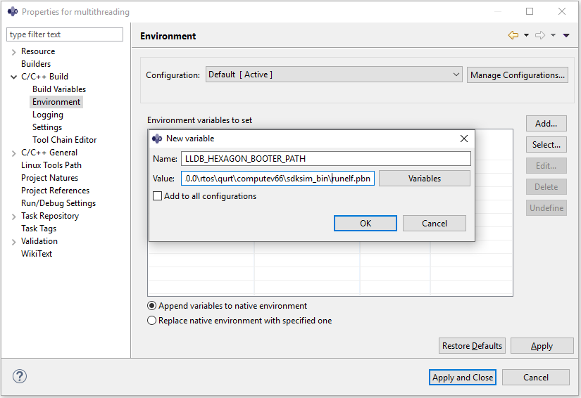
Click
Apply and Closeto finish setting theLLDB_HEXAGON_BOOTER_PATHenvironment variable. - Name :
Debug the project
-
To configure the debug environment, right-click on project and select :
Debug As > Debug Configurations...In the
Maintab, set :- C/C++ Application :
\path\to\SDK_ROOT\libs\run_main_on_hexagon\ship\hexagon_toolv84_v66\run_main_on_hexagon_sim
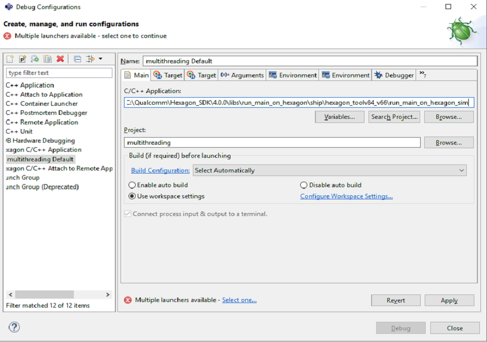
- C/C++ Application :
-
An error message
Multiple launchers available - Select one...appears. Please click onSelect one...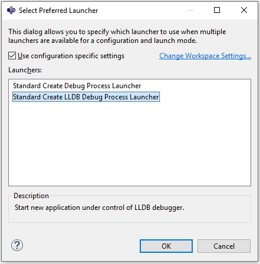
Tick the
Use configuration specific settingsbox and selectLaunchers :
Standard Create LLDB Debug Process Launcher -
Under the
Argumentstab, set the program arguments :- Program arguments :
--hexagon_Debug_toolv84_v66\multithreading_q.so
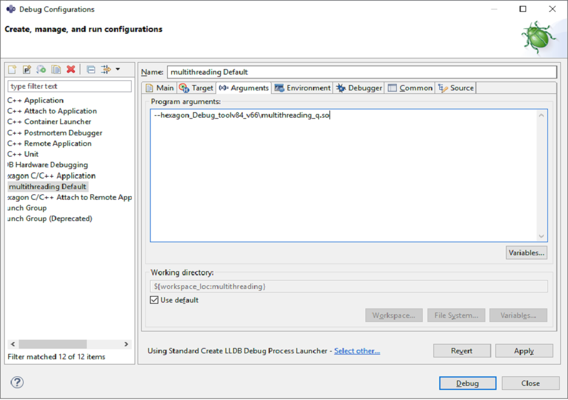
- Program arguments :
-
Some breakpoints may already be set by default. To read more about breakpoints set by default or how to set them manually, refer to the debug section of the IDE documentation.
-
Under the
Debuggertab, set the breakpoint :- Stop on startup at :
multithreading_parallel_sum
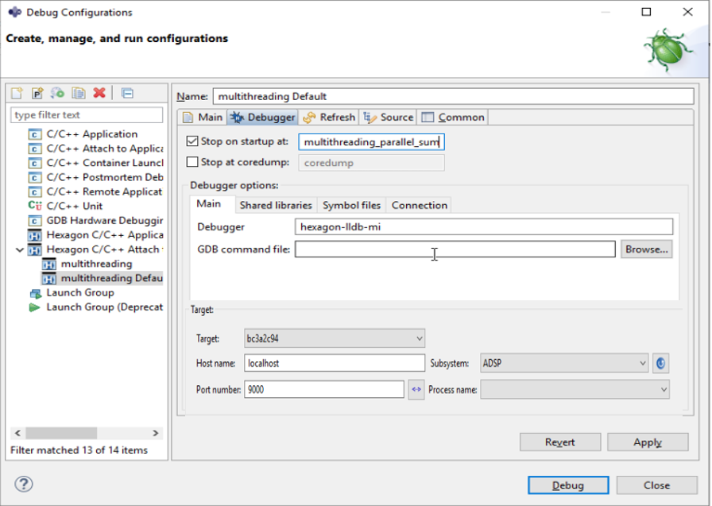
This sets the breakpoint at the entry point of the function
multithreading_parallel_sum.Click on
ApplyandDebugto start debugging the program on simulator. - Stop on startup at :
-
Eclipse now asks for a perspective switch prompt to switch to
Debug perspective. SelectSwitchand the executable is launched and the breakpoint is hit at themultithreading_parallel_sumfunction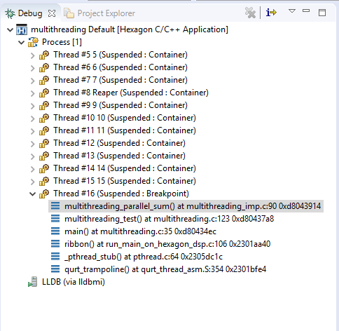
-
The debug perspective enables you to perform debugging operations such as step, disassembly, set breakpoints, view/modify variables, and view registers.
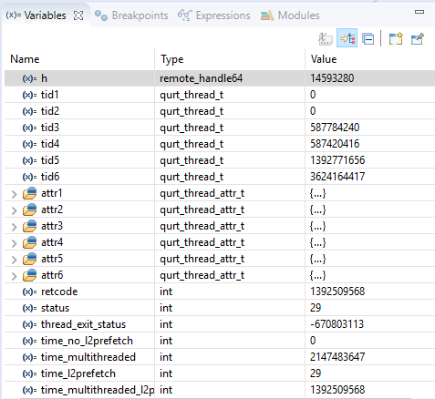
-
For example, clicking on the Registers tab of the debug perspective displays the contents of the Hexagon processor registers.
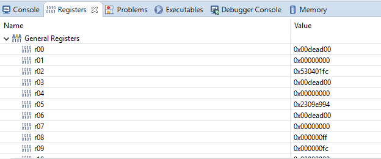
-
If any debug-related information is not displayed, you can display it by choosing Show View from the Window menu.